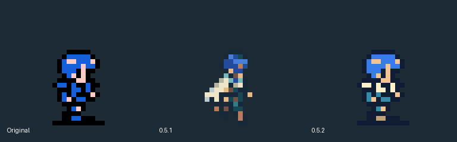
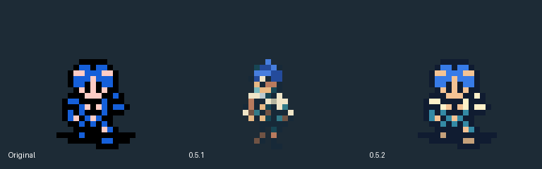
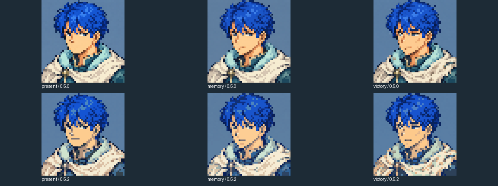
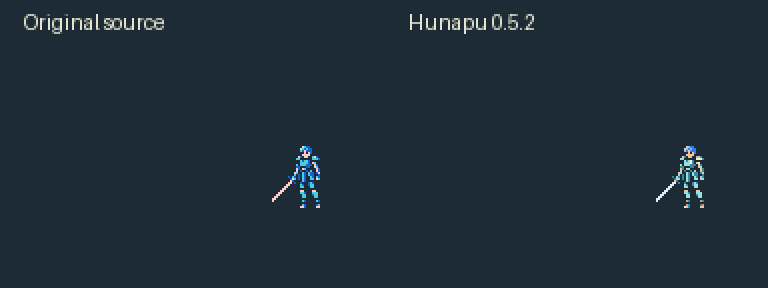

REVENGE MEMORIES / 0.5.2
清楚的字形、面部与原版手脚动作
据点提示改用12px中文点阵字；胡纳普地图与战斗采用原版逐像素骨架，保留四肢空隙和足点。三张剧情阶段画像修复嘴、鼻和眼，动作共用12色，画像各24色。
最终两轮真实按键试玩：M11第9回合完成护送，M15第5回合通关。74项动作检查、52个显示夹具与21项独立包检查通过。生成原图与制作工具不进入应用。
行走与实战攻击演示
视频无声，按实际采集时间戳输出，4×整数最近邻放大至1704×960。可全屏查看手脚与像素边缘。
四向行走 · 真实键盘输入四个方向、每方向两步均被观测到。打开原视频
M11实战攻击 · 真实按键触发来自第一轮实际战斗，含助跑、接触、HP反馈与回位。打开原视频
实机截图
原尺寸像素对照

原版 → 0.5.1 → 0.5.20.5.2保留原版轮廓与手脚负空间，重新统一蓝发、青蓝轻甲和米白肩披风；不再将生成大图压缩为小人。

上下侧两步的放大对照源帧设计对比，用于观察手与腿；实机行走见上方视频。

庆典、回忆、战后三张胡纳普画像上排为此前沿用的画像，下排为0.5.2。运行尺寸仍为48×48，嘴线与眼鼻在该尺寸检查。
普通、必杀与其他反馈动作
以下为实际战斗播放器的定向动作夹具，覆盖普通、必杀、落空、受击、濒死淡出与现有雷电剑。夹具使用隔离状态，不计作自然通关；濒死样本将初始HP设为1，伤害、必杀倍率及单次接触继续按现行规则处理。
普通剑：助跑、斩击、转身退回
原版独立必杀：跃起斩击与转身退回，仍只结算一次
未命中与正常回位
受击闪烁、抖动与HP递减
濒死：原4阶淡出，不改变留队与救治规则
现行雷电剑：按装备触发，不新增能力
移动时序1:1对照
普通原程序L05B37E共203 tick，接触索引90；必杀L05B3A9共263 tick，接触索引166。制作时离线提取完整切换等待，运行时为Godot原生JSON播放。下面左右两侧使用相同原程序帧/XY/镜像，只换配色；是源帧重放，不含HP暂停或自然通关。

左原版、右0.5.2 · 普通攻击与回位左原版、右0.5.2 · 独立必杀与回位两轮结果与验收范围
| 轮次 | 实际流程 | 结果 |
|---|
| 1 / M11 | 新游戏、序章、据点、世界行进、移动与战斗；捕获胡纳普两次完整攻击。 | 第9回合护送成功并胜利。原始记录 |
| 2 / M15 | 真实历史存档、整备装备、重新入场、移动与战斗；捕获胡纳普一次完整攻击后自然结束。 | 第5回合胜利。原始记录 |
无HP、数值、位置或随机种子编辑，无强制胜利。133帧战斗轮廓逐像素保留；52个显示夹具含三种画幅的画像与文字安全区，26954个可见不透明像素差异为0。测试范围为本次角色与显示修复，未重复15关全量回归。
全部图形测试使用后台防抢焦点保护与离屏视口。试玩包为 actual/dist/RevengeMemories.app（0.5.2）；退出旧进程后重开即可继续原存档。